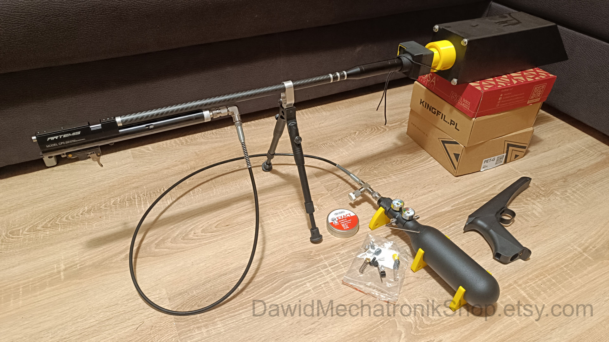

Now let's consider an air rifle powered by an external source of CO2, like a SodaStream tank. The main difference between a 12g cartridge and an external CO2 tank is the possibility to remove CO2 cartridge piercer which limits gas flow a lot.
But there are more advantages:
Of course there are also disadvantages:
Tl;tr: With an air rifle powered by a 12g CO2 cartridge you can increase power by 2-10% in a temperature range from 10 to 30℃.
To increase it more (42-48%) you need to use a bulk fill adapter, external CO2 tank and remove CO2 cartridge piercer.

Below you can see comparison between factory air rifle and air rifle without cartridge piercer:

As you see now we have huge power gain, just after removing the cartridge piercer. You gain 31-47% power in the 10-25℃ temperature range. In 25-30 ℃ temperature range power gain drops to 12%. Without any disadvantages in air gun handling (trigger action, air rifle reloading force, kicking during shooting).
I added a 4mm and 8mm spacer to the factory spring. Bigger spring preload makes the hammer strike valve harder. How about power increase? Let's see the chart:

In temperatures below 20℃ adding any spacer to hammer spring decreases the power a little. Bigger spacer limits it more than a smaller spacer. Above 20℃ you will gain some extra power. You will gain 40-46% of power while compared to a stock air rifle.
Factory spring is not bad. Stronger hammer spring makes the air rifle harder to reload, air rifle kicks harder, and trigger is harder to operate. So after all there are more disadvantages than advantages. Definitely there is no need for a harder one, you can only try adding a small spacer during a hot day.
I tested two new return springs instead of factory valve return spring (medium and super soft). With a weaker valve spring it is easier to open the valve, the valve stays open for more time because weaker valve spring push the hammer back with smaller force. It sounds like a better upgrade than a harder hammer spring, because it doesn't influence trigger action, air rifle reloading force or kicking during shooting. How about power increase? Let's see the chart:

In temperature range 10-30℃: Super soft valve return spring performs the best. It gives 41-48% extra power, without any disadvantages in air gun performance (of course there will be less shots per cartridge).
Good choice for tuning, gives extra power in all temperatures, no disadvantages in air rifle handling.
As far as I know in a couple countries this air rifle is equipped with a 2,5mm transfer port and in fact it can restrict power a little.
Keep in mind that the transfer port is only one part, there are two more: barrer port and valve port. To achieve full power gain
you should drill the barrel port and valve port to a bigger size.
Making the barrel port hole too big may damage pellet during loading or even pellet may partially fall into port and block there.
Some people say you shouldn't drill it more than 3,8mm for 4,5mm caliber. During drilling you can also damage the barrel and valve, drill press is recommended.
I plan some more tests with "factory" air rifle so my barrel and valve ports are factory size, about 3,5mm. I tested various transfer port sizes
(port diameter 2,5mm; 3,0mm and 4,0mm) instead of the 3,5mm factory transfer port. Bigger transfer port restricts gas flow less, so bigger is better.
How about power increase? Let's see the chart

When you change the 2,5mm transfer port to a bigger one you will gain some power. When you already have a 3,5mm transfer port then changing it to 4mm gives small gain during hot days and small decrease near 15℃. After drilling the barrel port and valve it should perform better. In both cases there are no disadvantages in air gun handling (of course there will be less shots per cartridge).
Good choice for tuning when your rifle uses a 2,5mm transfer port. When you already have a 3,5mm transfer bigger transfer port it gives no profit (without drilling barrel port and valve). No disadvantages in air rifle handling.
Now you know how a single upgrade works with no piercer mod. Below you can see comparison between single upgrades to see which one gives the best results:

Again the best single upgrade is a super soft valve return spring. The 4mm hammer spring spacer works similarly to a super soft valve spring, but it decreases performance of air rifle handling (worse trigger action, harder air rifle reloading, stronger kick during shoot). Changing the transfer port from 3,5mm to 4mm (without drilling barrel/valve!) makes minimal impact to air rifle power.
Below you can see comparison between multi upgrades to see which combination gives the best results:

As you see you can't add two upgrades together and expect double power gain from those upgrades. While upgrading air gun powered by CO2 external tank you achieve the best result while replacing valve return spring and adding piercer eliminator mod only. Replacing more parts like: transfer port (without drilling barrel/valve), adding stronger hammer spring or adding spacer to factory spring gives nothing more after replacing valve return spring and adding piercer eliminator mod.
Instruction and parts list needed for external CO2 tank build is avaliable here:

You can't do more with an air rifle powered by CO2. To make it more powerful you need to power it by an external tank with air under high pressure, so you need to go for PCP mod.